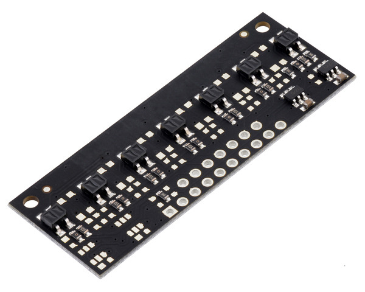
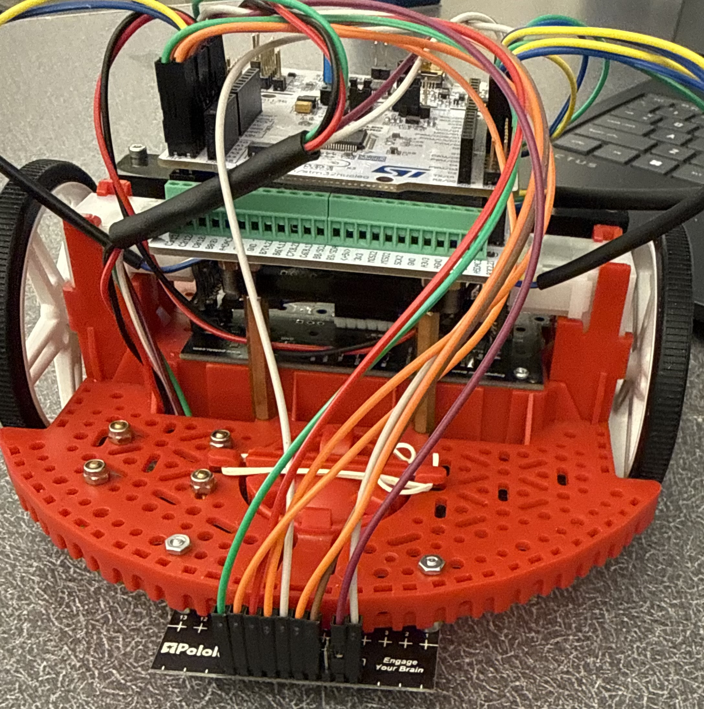
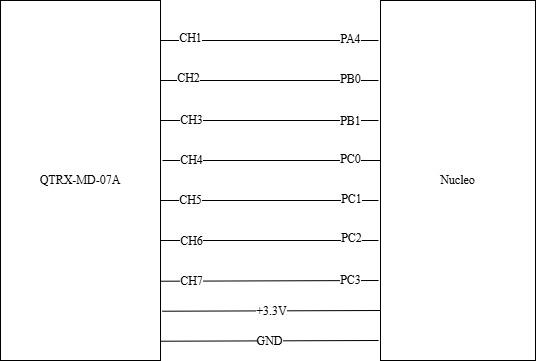

Line Sensor
Part of our strategy to complete the track is to follow large sections of the printed lines. To choose a line sensor, we first evaluated sensor type. We determined that analog reflectance sensors are the most effective option for this lab. Analog sensors provide continuous reflectance values, allowing smoother control and enabling proportional or PID-based line-following algorithms. Digital sensors require thresholding and provide less information, while serial-based sensors add unnecessary complexity and communication overhead. Therefore, analog sensors offer the best balance of simplicity and control performance.
We then evaluated sensor interface, channel count and spacing, sensor height, channel crossover, and compatibility with expected line width to choose the specific device we would be working with. The sensor we selected for this project is the Pololu QTRX-MD-07A Reflectance Sensor Array. This is a 7-channel analog reflectance sensor with 8 mm spacing.
{kind=link}

Sensor Justification
We determined 7 channels is best for line tracking in this application, as it provides the ideal balance between increasing positional accuracy of the line but avoiding the law of diminishing return with the unnecessary minimal benefit of even more sensors. With multiple sensors, the robot can sense not just whether it is over the line, but where it is in relation to the line. The analog output of the sensor is weighted with the sensor position to determine the line’s offset from center. This offset will be used as error for setpoint control and result in decisions to go straight or turn. A spacing of 8mm is ideal, as this will allow the sensor to cover a range of 48 mm without redundant measurements, while also being close enough to avoid “blind spots”. A balance is needed between tight packing and broad spacing. This configuration enables robust line position estimation while maintaining sufficient sensitivity to detect sharp transitions and curves.
Mounting
We mounted the sensor to the bottom front of the Romi chassis using screws, nuts, and standoffs. The clearance from the ground was approximately 5mm, chosen out of convenience due to the heights of the accessible standoffs and verified through line sensor controller testing. This likely produced some crossover, which is desirable. Less crossover means more abrupt transitions as the line moves from one sensor to the next. Too much crossover reduces “spatial resolution” (i.e. most adjacent sensors reading the same thing). Moderate crossover increases this resolution while maintaining smooth transitions.
{kind=link}

Wiring
The Pololu QTRX-MD-07A required 7 ADC-capable GPIO pins on the Nucleo (one for each sensor), as well as +3.3V/GND. Each of the 7 pins on the Nucleo were configured as analog-to-digital (ADC) pins to receive analog output from the sensor. Below is a wiring diagram for the line sensor.
{kind=link}
